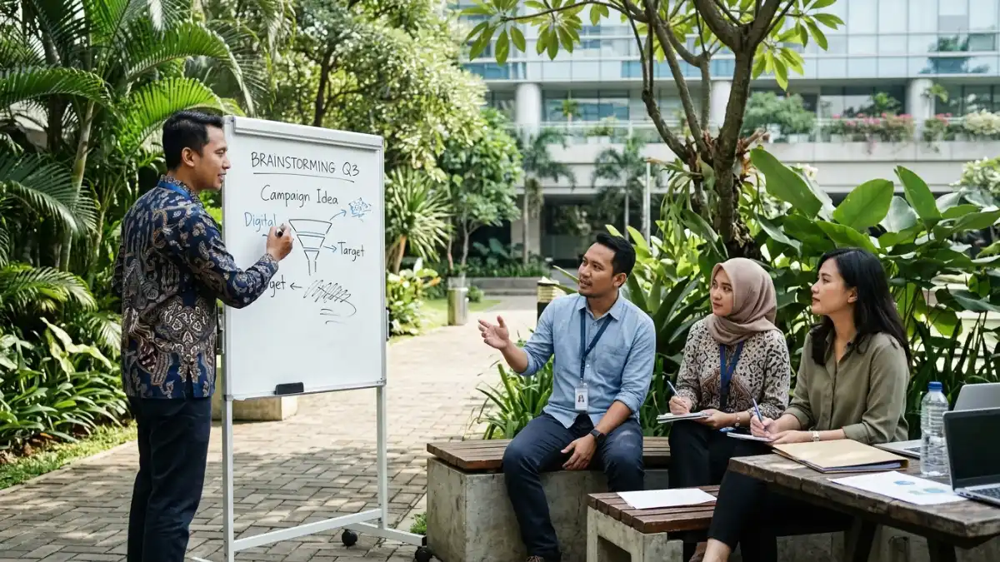

Manfaat meeting outdoor untuk kreativitas tim terlihat pada tahap pencarian ide: berjalan dan suasana terbuka membantu peserta menghasilkan lebih banyak gagasan segar dibanding rapat duduk.
- Dalam studi Stanford 2014, 81 persen peserta lebih kreatif saat berjalan dibanding saat duduk pada tugas ide divergen.
- Peserta yang berjalan di luar ruangan menghasilkan analogi paling baru dan berkualitas tinggi dalam studi yang sama.
- Efek terbesar muncul pada pencarian ide, bukan pada keputusan yang menuntut satu jawaban benar.
- Tim mendapat hasil terbaik bila meeting outdoor memiliki pertanyaan pemantik yang jelas dan pencatat yang ditunjuk.
DAFTAR ISI
- 1. Apa bukti ilmiah bahwa berjalan meningkatkan kreativitas?
- 2. Apakah ruang terbuka memberi nilai tambah dibanding treadmill?
- 3. Untuk tahap kerja kreatif apa meeting outdoor paling berguna?
- 4. Bagaimana menjalankan brainstorming di luar ruangan?
- 5. Apa kaitan walking meeting dengan kreativitas dan keterlibatan kerja?
- 6. Apa batasan meeting outdoor untuk kerja kreatif?
- 7. Kesimpulan
- 8. FAQ
1. Apa bukti ilmiah bahwa berjalan meningkatkan kreativitas?
Bukti utamanya berasal dari empat eksperimen Stanford yang diterbitkan pada 2014: 81 persen peserta menghasilkan lebih banyak ide kreatif saat berjalan dibanding saat duduk, dengan kenaikan rata-rata sekitar 60 persen.
Penelitian tersebut dilakukan oleh Marily Oppezzo dan Daniel Schwartz, lalu dimuat di Journal of Experimental Psychology: Learning, Memory, and Cognition. Para peneliti memakai tes kegunaan alternatif Guilford, yaitu tugas menyebutkan sebanyak mungkin cara memakai benda sehari-hari seperti kancing atau ban.
Dalam eksperimen pertama, peserta mengerjakan tugas tersebut sambil duduk, lalu sambil berjalan di treadmill. Hasilnya, mayoritas peserta menghasilkan ide yang lebih banyak, lebih baru, dan lebih sesuai saat berjalan.
Eksperimen berikutnya menunjukkan efek sisa. Peserta yang duduk setelah berjalan masih mendapat dorongan kreativitas dibanding peserta yang duduk terus. Dengan kata lain, sesi jalan singkat sebelum diskusi di meja pun berpotensi bermanfaat.
Perlu dicatat bahwa studi ini menggunakan tugas individual di laboratorium. Hasilnya tidak otomatis berlaku sama persis untuk diskusi kelompok di dunia kerja, sehingga penerapannya sebaiknya diuji dan dievaluasi oleh tim masing-masing.
2. Apakah ruang terbuka memberi nilai tambah dibanding treadmill?
Ya, menurut studi Stanford yang sama, berjalan di luar ruangan menghasilkan analogi paling baru dan berkualitas tinggi, serta efek berjalan dan efek lingkungan luar ruangan terbukti dapat dipisahkan.
Eksperimen ketiga dan keempat memindahkan peserta ke luar ruangan. Peserta yang berjalan di luar menghasilkan analogi kreatif yang paling orisinal dibanding kelompok lain.
Para peneliti menyimpulkan bahwa berjalan dan stimulasi luar ruangan masing-masing memberi sumbangan sendiri.
Bagi tim, artinya kombinasi gerak dan suasana terbuka dapat memberi manfaat ganda. Pemandangan yang berubah, cahaya alami, dan udara segar dapat membantu peserta keluar dari pola pikir yang sama dengan yang mereka pakai di ruang rapat.
Mekanisme pasti di balik efek ini belum dipastikan. Penjelasan yang umum diajukan adalah bahwa gerak ritmis dan perubahan lingkungan mengurangi kekakuan berpikir sehingga asosiasi antargagasan lebih mudah muncul.
3. Untuk tahap kerja kreatif apa meeting outdoor paling berguna?
Meeting outdoor paling berguna pada tahap pencarian ide, pembingkaian ulang masalah, dan penemuan sudut pandang baru, karena efek yang terbukti berkaitan dengan berpikir divergen.
Berpikir divergen adalah kemampuan menghasilkan banyak kemungkinan jawaban dari satu pertanyaan. Contohnya adalah menyusun daftar ide kampanye, nama produk, fitur baru, atau solusi untuk hambatan proses.
Dalam studi Stanford, tugas berpikir konvergen, yaitu mencari satu jawaban tepat, tidak menunjukkan keuntungan sekuat itu. Hanya sekitar 23 persen peserta yang membaik pada tugas tersebut saat berjalan.
Karena itu, tim sebaiknya membagi alur kerja. Gunakan meeting outdoor untuk memunculkan opsi sebanyak mungkin, lalu pindah ke ruang tenang untuk menilai, memilih, dan merinci keputusan. Pembagian ini menjaga manfaat kreatif tanpa mengorbankan ketelitian.

Pencatatan ide yang teratur sangat penting agar gagasan kreatif selama meeting outdoor terdokumentasi dengan baik. (Ilustrasi)4. Bagaimana menjalankan brainstorming di luar ruangan?
Brainstorming di luar ruangan berjalan baik bila tim memakai satu pertanyaan pemantik, kelompok kecil, batas waktu jelas, dan satu orang yang bertugas mencatat ide.
Langkah praktis yang dapat dicoba:
- Rumuskan satu pertanyaan terbuka, misalnya "Cara apa saja untuk memperkenalkan produk ini ke pelanggan baru?"
- Batasi peserta pada tiga sampai lima orang agar semua dapat mendengar dan berbicara.
- Tentukan durasi 20 sampai 30 menit dan jalur atau lokasi yang sudah dikenal.
- Tunjuk satu pencatat atau gunakan aplikasi catatan suara dengan persetujuan peserta.
- Tutup sesi dengan merangkum maksimal lima ide yang paling menarik untuk dibahas lebih lanjut di dalam ruangan.
Tips tambahan adalah meminta setiap peserta memikirkan satu ide sendiri selama beberapa menit sebelum berbagi. Cara ini mencegah satu orang mendominasi dan menjaga keragaman ide.
5. Apa kaitan walking meeting dengan kreativitas dan keterlibatan kerja?
Survei terhadap sekitar 150 pekerja dewasa di Amerika Serikat, yang dilaporkan di Harvard Business Review, menemukan peserta walking meeting 5,25 persen lebih mungkin melaporkan diri kreatif dan 8,5 persen lebih mungkin melaporkan keterlibatan tinggi.
Data tersebut berasal dari laporan mandiri responden, bukan eksperimen terkontrol. Karena itu angka ini lebih tepat dibaca sebagai indikasi hubungan, bukan bukti sebab-akibat.
Meski begitu, hasilnya sejalan dengan temuan laboratorium Stanford. Keduanya menunjukkan bahwa gerak dan suasana yang lebih santai berkaitan dengan persepsi kreativitas dan keterlibatan yang lebih baik.
Bagi tim, ini cukup menjadi alasan untuk mencoba format tersebut secara terukur dan melihat apakah hasilnya cocok dengan budaya kerja sendiri.
Gambaran umum kelebihan lainnya dapat dibaca di artikel pilar kelebihan meeting outdoor untuk tim dan perusahaan.
6. Apa batasan meeting outdoor untuk kerja kreatif?
Batasan utamanya adalah gangguan lingkungan, kesulitan mencatat, ketergantungan pada cuaca, dan kenyataan bahwa efek kreatif terbukti hanya pada jenis tugas tertentu.
Kebisingan dapat memutus aliran ide. Panas berlebih membuat peserta cepat lelah. Kegiatan menulis di papan atau layar juga sulit dilakukan sambil berjalan.
Selain itu, tidak semua orang merasa nyaman berpikir keras sambil bergerak. Sebagian peserta justru lebih produktif saat duduk tenang.
Fasilitator sebaiknya memberi pilihan, misalnya duduk di bangku taman atau gazebo, agar peserta tetap dapat berkontribusi sesuai gaya kerjanya.
Untuk panduan menyiapkan pelaksanaan, lihat cara mengadakan meeting outdoor yang efektif. Untuk dimensi kebugaran, baca walking meeting untuk kesehatan karyawan.
7. Kesimpulan
Meeting outdoor mendukung kreativitas tim terutama pada tahap mencari ide, dan hasilnya paling baik bila dikombinasikan dengan sesi indoor untuk memilih dan merinci keputusan.
- Pakai meeting outdoor untuk brainstorming, bukan untuk keputusan rinci.
- Sediakan pertanyaan pemantik, pencatat, dan durasi yang jelas.
- Jaga kelompok tetap kecil dan beri opsi duduk bagi yang membutuhkan.
- Evaluasi hasilnya setelah beberapa sesi sebelum menjadikannya kebiasaan rutin.